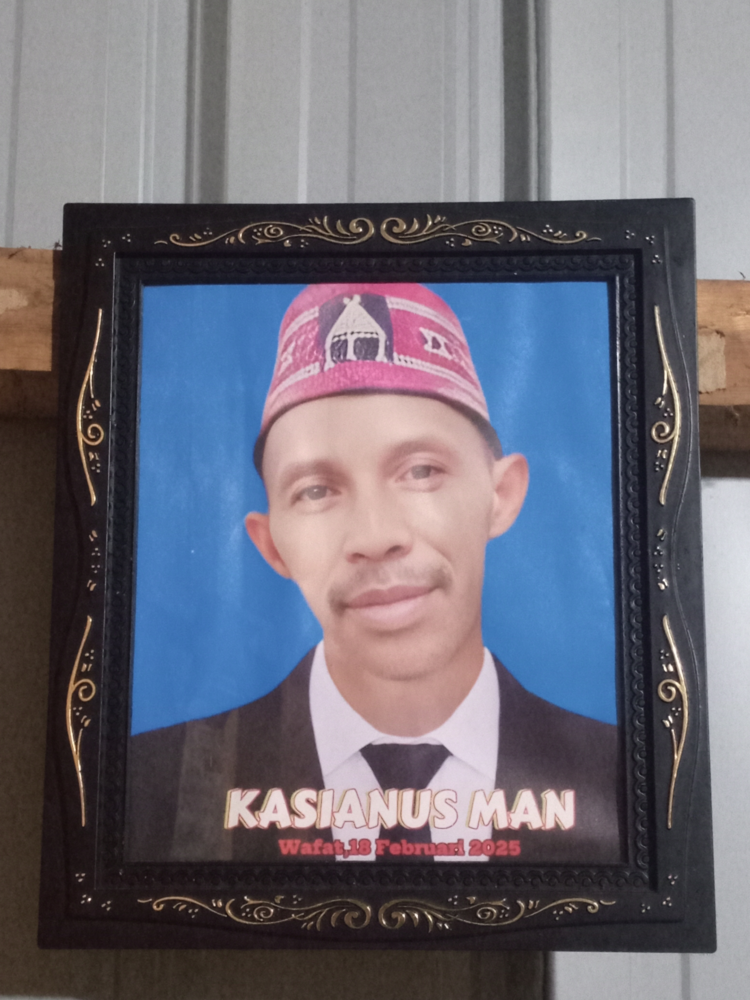
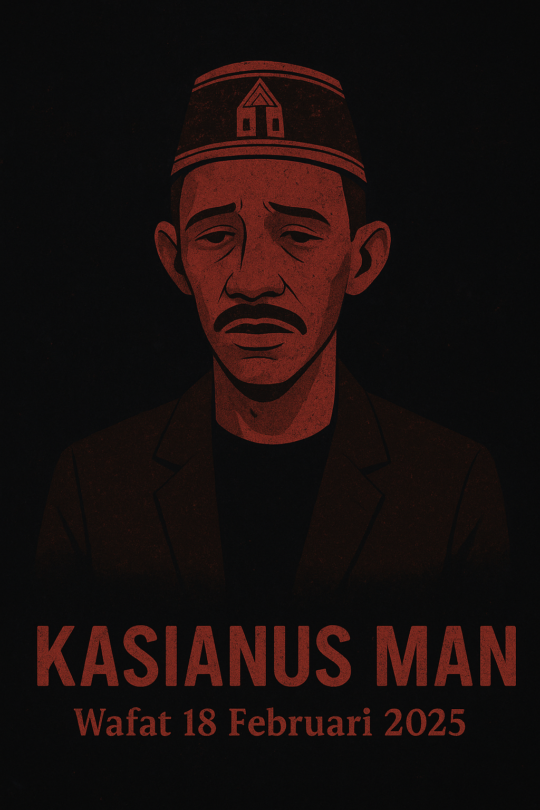
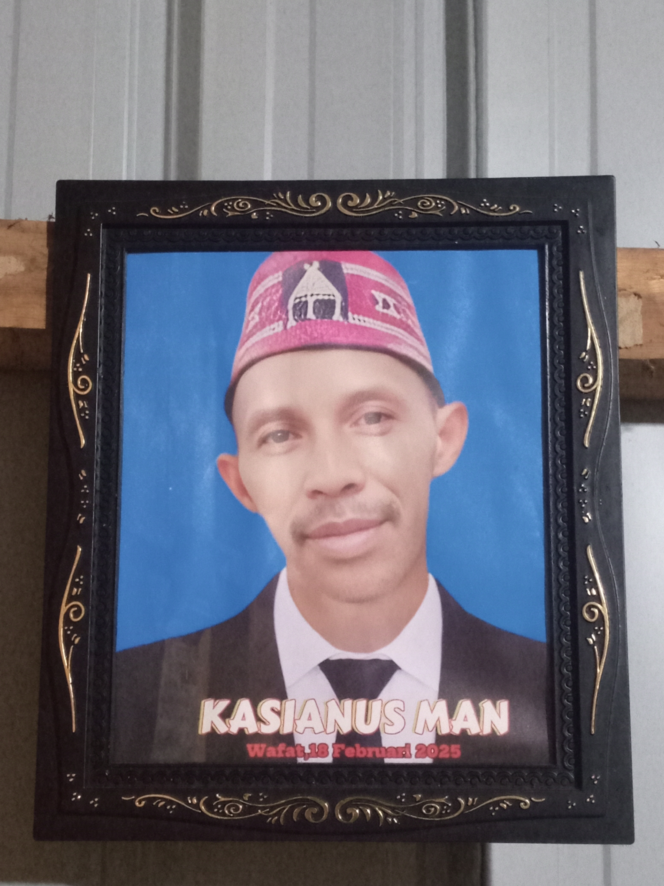
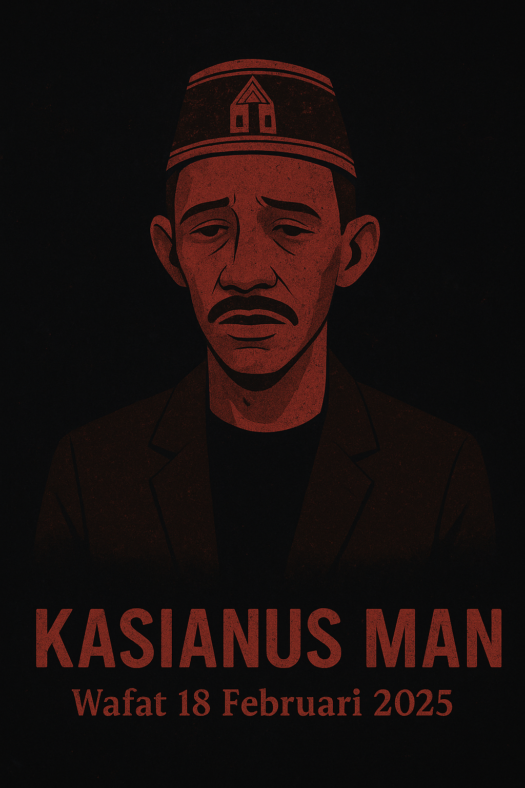

Wafat 18 Februari 2025
Kasianus Man dikenal sebagai pribadi sederhana dan penuh welas asih. Ia mendedikasikan hidupnya untuk komunitas dan budaya lokal. Kepergiannya menyisakan duka yang dalam, tetapi warisannya tetap hidup dalam kenangan dan karya-karya yang ia tinggalkan.